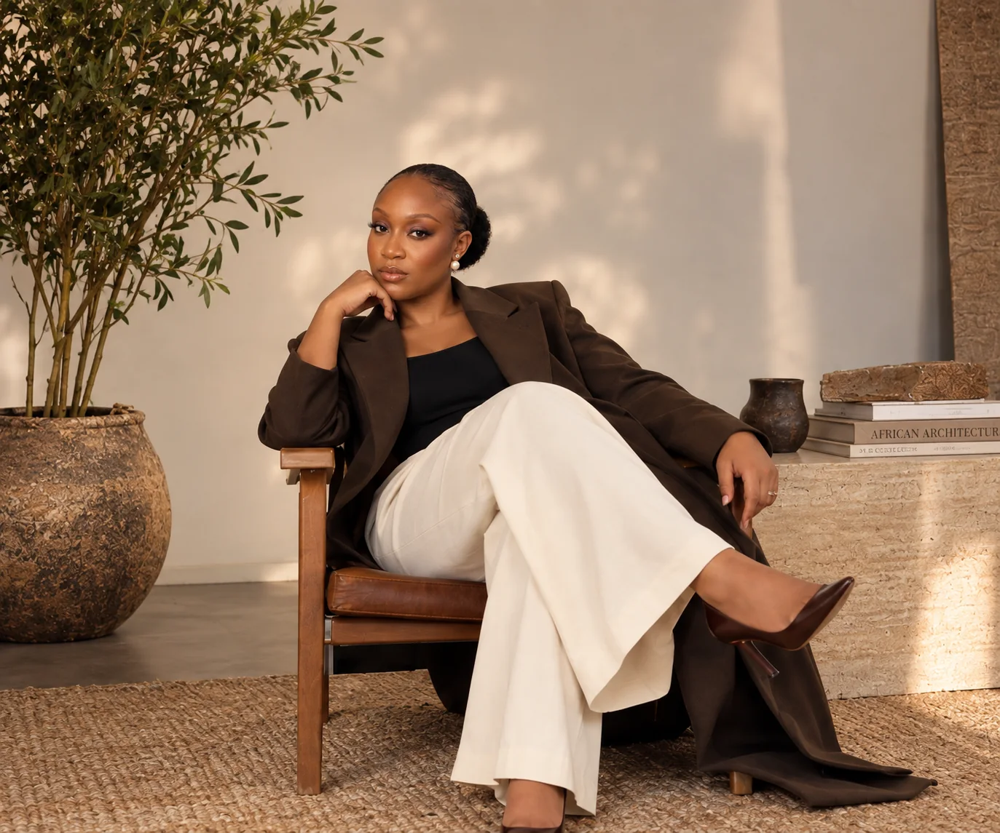
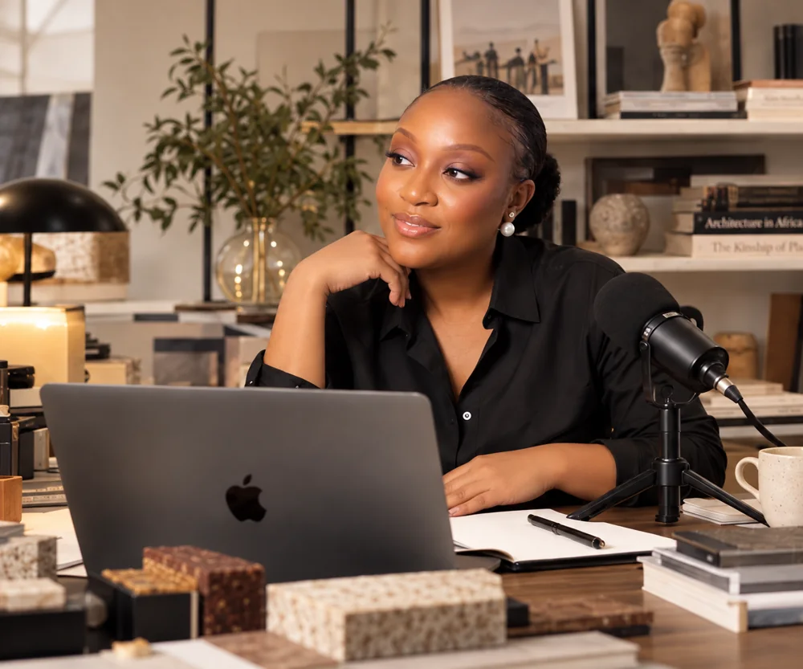

SPACES & OBJECTS01
STUDIO COKAARCHITECTURE. INTERIORS. CONSTRUCTION.
Thoughtful, climate-responsive spaces. Designed for the way we live, and the places we belong.
Explore the studio (opens in a new tab)ARCHITECT · DESIGNER · BUILDER OF POSSIBILITIES
I’m Crystal Kizor. I design spaces, share ideas, and build initiatives that help people—and the places they call home—thrive.
Explore my world
DESIGN. KNOWLEDGE. IMPACT.How can the things we build make life better?
That question connects my work as an architect, designer, entrepreneur, researcher and creator. From climate-responsive buildings to learning platforms and community initiatives, my work begins with people.
Through design, education, faith and opportunity, I’m exploring what it means to build with care—for our environment and for each other.
More about my journey (opens in a new tab)
Spaces to live well. Knowledge to move forward.
Opportunities
to become more.
Find the part of this world that speaks to you.
Thoughtful, climate-responsive spaces. Designed for the way we live, and the places we belong.
Explore the studio (opens in a new tab)Furniture and everyday objects. Contemporary by design, rooted in African materials, craft and ideas.
Tools, knowledge and conversations to help architects learn, grow and build more fulfilling careers.
Conversations on architecture, African cities, climate, design and the possibilities of entrepreneurship.
Join the conversationExpanding access to education and creating opportunities for children and young people to thrive.
A Christian youth movement. A space for truth, healing, belonging and life in Christ.
Each initiative has its own expression. All share a belief in a better human experience.

A SPACE FOR QUESTIONS THAT MATTER.04 / IDEAS & CONVERSATIONS
I write, research and speak about the relationships between design, climate, culture and everyday life—and what we can do better.
A space, an idea, a conversation.
The next good thing starts
with a connection.